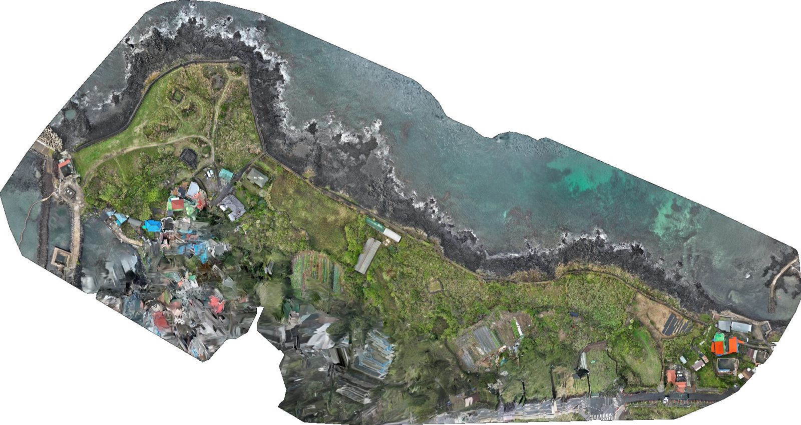
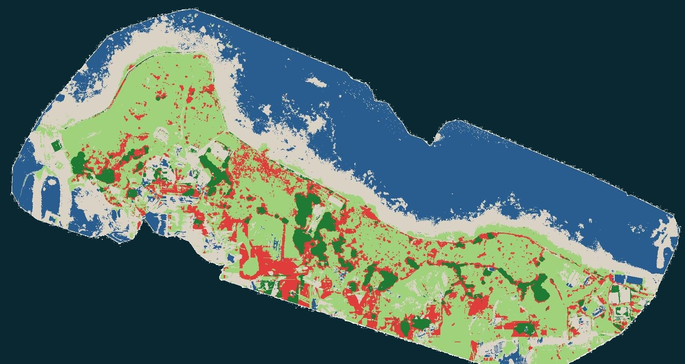
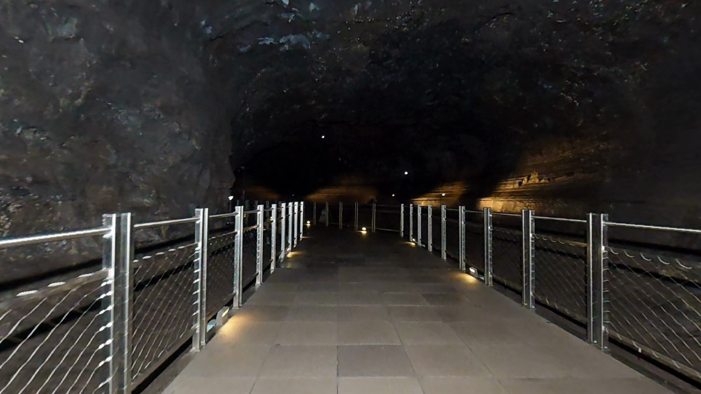
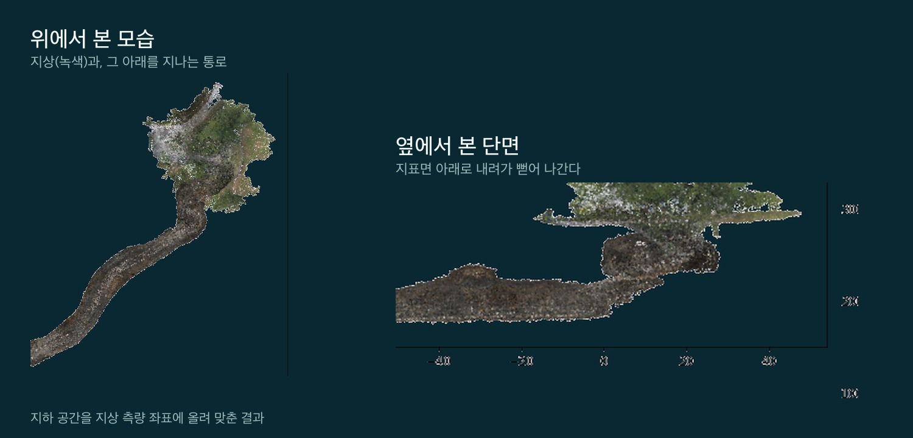
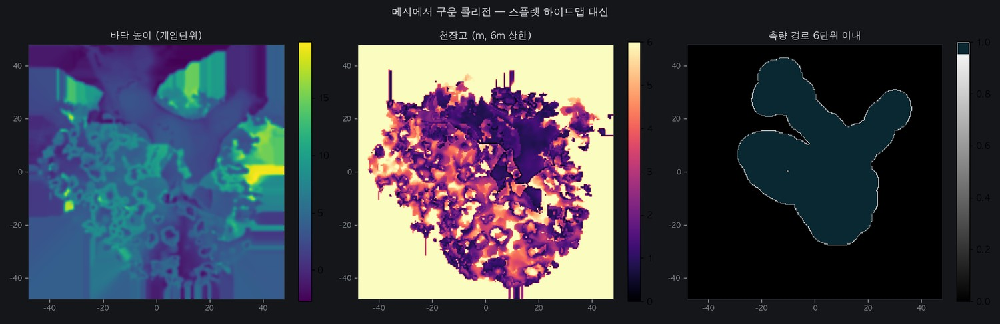

지역에서 GPU가 필요해지는 일
센터는 바이오를 중심으로 설계되지만, “같은 계산을 수없이 되풀이한다”는 조건에 걸리는 작업은 분야를 가리지 않습니다. 제주그래퍼가 하는 네 가지 일을 예로 덧붙입니다. 네 가지가 따로 노는 것이 아니라, 찍고 → 재고 → 맞추고 → 쓰는 한 줄로 이어집니다.
① 식물의 상태를 숫자로 바꾸는 일
멀티스펙트럴 드론은 사람 눈에 보이지 않는 파장(근적외선 등)까지 함께 찍습니다. 한 번의 비행으로 사진 수천 장을 찍고, 이것을 센티미터 단위 정사영상 한 장으로 합친 뒤 식생지수를 계산하고, 픽셀 한 칸 한 칸을 식물의 종류와 상태로 분류합니다.
합치기
사진 수천 장을 겹쳐 가며 한 장의 지도로
재기
픽셀 수억 개마다 파장별 값으로 식생지수 계산
가르기
그 값을 학습된 기준에 대어 종류·상태로 분류


식물의 생육 상태를 데이터로 바꿔 판단한다 — 바이오기업이 하려는 일과 구조가 같습니다. 그리고 이 방식이 닿는 곳은 한 자리가 아닙니다.
생장과 생산량
자라는 속도와 잎의 활력을 지수로 재고, 철마다 쌓아 수확량을 가늠합니다
상태 분석
병해·수분 스트레스처럼 눈에 띄기 전의 변화를 파장 차이로 먼저 잡습니다
농지 측량
면적·경계·경사를 실측치로 — 보조금과 경작 계획의 근거가 됩니다
산지 분석
수종과 나무 높이, 숲의 밀도를 넓은 면적에서 한 번에 봅니다
모두 면적 × 촬영 횟수 × 픽셀당 계산으로 양이 불어나는 일입니다. 한 필지를 한 번 보는 것과, 한 지역을 철마다 보는 것은 필요한 장비가 다릅니다.
② 큰 공간을 통째로 3D로 되살리는 일
백록담, 성산일출봉, 용암동굴처럼 한 장에 담기지 않는 공간이 있습니다. 사진 수천 장에서 공간을 3D로 되살리는 작업은, 수백만 개의 점을 놓고 “이 각도에서 이렇게 보여야 하는데 안 맞네” → 조금 고치기를 수만 번 되풀이하는 일입니다. 2차 특강의 ‘간 맞추기 × 수만 번’과 구조가 같습니다.


③ 지하를 지나는 통로와 지상의 위치를 맞추는 일
동굴 안에는 GPS 신호가 닿지 않습니다. 그래서 지하에서는 라이다로 걸어 들어간 궤적을 쌓고, 입구와 지상에서 잡은 기준점으로 그 궤적을 지상 측량 좌표에 올려 맞춥니다. 맞추고 나면 “이 통로가 지상의 어디 아래를 지나는지”, “천장까지 몇 미터인지”가 숫자로 나옵니다.

이 맞추는 계산도 반복입니다. 수천만 개의 점을 조금씩 돌리고 옮겨 가며 오차가 가장 작아지는 자리를 찾습니다. 공간이 길고 점이 많을수록 메모리가 먼저 모자랍니다.
④ 그렇게 만든 것을 쓰는 곳 — 게임과 연구
초정밀로 되살린 공간은 보기만 하는 그림이 아닙니다. 점 하나하나에 실제 좌표가 붙어 있어서, 브라우저에서 직접 걸어 다니게 만들 수도 있고 거리·면적·천장고를 재는 도구로도 쓸 수 있습니다.
걸어 다니게 하려면 눈에 보이는 것만으로는 안 됩니다. 수백만 점에서 바닥 높이, 천장까지의 높이, 지나갈 수 있는 구역을 따로 계산해 내야 합니다. 이것도 전부 반복 계산입니다.

재지 않고도 재는 자료
현장에 다시 가지 않고 거리·면적·천장고를 확인하고, 해마다 찍어 변화를 봅니다
들어가지 않고도 들어가는 공간
출입이 어려운 곳을 브라우저에서 걸어 다니게 — 보존과 공개를 함께 풀 수 있습니다
네 가지 모두 TRACK 1(연산 자원)에 해당하는 일입니다. 데스크톱 한 대로는 메모리가 먼저 모자라고, 돌려도 며칠이 걸립니다. 센터가 생기면 지역에서 이런 일을 하는 쪽도 선택지가 하나 늘어납니다.